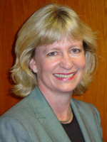
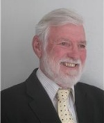
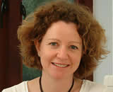

|
Mary Anderson (widow of David Anderson) went to work in Ghana in 1952, where she met David.
They lived in West, East and Southern Africa for some 26 years before returning to the UK, where she now lives.
Mary takes an interest in other organisations involved with African countries, including Ghana School Aid and the Britain-Tanzania Society |
|

Janis Anderson, daughter of David Anderson, has a background in banking and business.
She was born in Ghana and brought up in East Africa.
She retains strong links with the continent, and is chair of the DAAT. She is currently working as Managing Director of Caremark Aylesbury. |
|
Cath Attlee was involved for some years in development in Southern Africa, including working with David Anderson and others to support the establishment of the Southern African Development Coordination Conference in the early 1980s.
Since then she has been employed in the National Health Service and in Local Government Social Services in the UK, but has maintained her interest in community development in Africa, through the DAAT and other initiatives. |
|
Tony Dodds is now retired after a career in adult and distance education, mainly in Africa.
He worked for several years in Tanzania, Mauritius, Nigeria and Namibia mainly in university adult and distance education departments.
While Director of the International Extension College, Cambridge he carried out many consultancies and training activities in these and other countries |
|

Dr Davina Hoile, daughter of David Anderson, was born and brought up in Kenya, then moved to Lesotho in her teens.
She studied veterinary science at Cambridge University and after a short period in private practice returned to specialise in small animal surgery and complete a PhD.
She has a strong interest in tertiary education and the impact of higher education on communities. |
|
Mr John Thomas has been a DAAT Trustee since 1995.
His background is in teaching, distance education and broadcasting.
From the mid-1980s until recently, he was involved in consultancy and training in the use of radio and audio for distance education, working mainly under the auspices of the International Extension College (IEC), and particularly in the developing countries of east and southern Africa.
He is the author of Distance Education for Refugees (Cambridge: IEC, 1996) and Audio for Distance Education and Open Learning (Vancouver & Cambridge: COL & IEC, 2001). John is now retired and lives in London with his wife Anne Cameron. |
|
Jason Pennells |